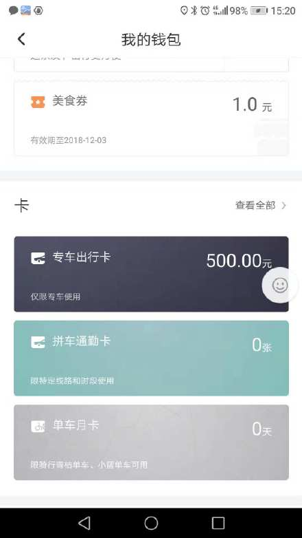
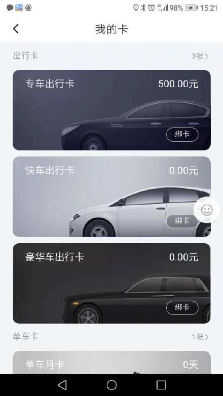

滴滴出行卡让我失望，资和信储值卡让我绝望
黑狼语录：
—— 很小的小事，能影响好几天的心情。碰上了，不吐不快。
我平时很少打车，甚至开私家车的次数也越来越少。要不是每天早上，方小玉同学总处在上学迟到的边缘，我可能几个月都不会开一次车。
每周限行的那一天，为了避免方小玉上学迟到，只能打车了。
自从有了滴滴后，最大的感觉是已经找不到空驶的出租车了，别无选择，只能使用滴滴软件的叫车服务。从这一点上来看，滴滴的出现未必方便了乘客，应该是方便了出租车司机更恰当。
以前有一张资和信的储值卡，合作的商家很少，里面的钱很难花出去。前几天无意中翻了出来，查询资和信的网站，最后发现最适合我的只有滴滴APP中慢慢消费掉它。尽管我打车的次数不多，距离也很近，但总比那张卡积满了灰尘要好得多，决定在滴滴APP中的钱包里面，充值500元，这样可以在以后的快车出行中消费掉。
结果，滴滴APP的出行卡充值页面有个小小的“陷阱”，如下图：
卡一栏中，突出位置是专车卡，我也没有多想，就直接冲入了500元。
过了一会儿，随意点击，发现卡一栏还有一个更多的连接，出现了如下页面：
我立马意识到，充错卡了！
我早已过了虚荣的年纪，能花20块钱解决事情，绝不会花40元去解决，即使更有面子、更加舒适，甚至是更加节约时间。
所以平时我使用的是滴滴快车，最多就是来个优享快车，因为专车的价格比快车贵很多。
充错了卡，只能联系客服了，这也让我体验到了对滴滴的失望和对资和信的绝望。
联系滴滴客服，客服很礼貌地让我联系资和信，说只有资和信的客服才能处理出行卡充值业务。我马上联系资和信的客服，结果又被很礼貌地退了回来，让我联系滴滴客服，说只有滴滴才能处理滴滴APP的业务。我又联系滴滴客服， ……
如此反复了三四次，均说自己无能为力，对方才能解决我的诉求。
我的诉求很简单：一种是换成快车卡，另一种是专车卡退款后重新充值到快车卡。
当我语气强硬之后，资和信的答复是：“充值后无法退款，他们的业务就是这样规定的，他们也无法修改滴滴APP的业务”；滴滴的答复是：“出行卡业务是资和信的合作项目，他们无法更改，快车、专车是两个部门，不能调整出行卡。然后是客服大力强调专车卡的面子与舒适”。
我突然有了种被潜规则了的感觉，也没有了继续跟客服交流的欲望。尽管500元的购买力，变成了300元的购买力（我认为乘坐出租车的面子和舒适的价值基本为0），让我很不爽，我也不想再联系客服了，我想这个结果也是客服们希望得到的。
只能说，滴滴让我很失望，客服的推诿，部门间的不能协作，让一件很小的事情，变得无法解决，最后只能不了了之。至于资和信，给我的只是绝望，因为他们甚至都没有试图解决这个小问题，一口拒绝，拒之门外。
希望不久的将来，我们国家的法规更加健全、更加规范，因为我们无法指望这些稍稍有点名气的企业，能真正地把顾客当成上帝。